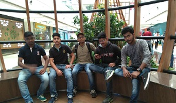

The Journey Under the Waves
It had all started back in 2016, when I arrived at Burla for my engineering journey. For me it's a journey of power, journey of learning and journey to discover myself. It was a coincidence that I joined SUIIT and became a known face from the very early days. This kind of coincidence happens many time and almost every time! Who knew back then that this would lead me to Lutyens' Delhi one day! The journey that breaks the stereotype mindset of students at every step. The journey of a failed student which would encourage every student to think differently. So let see this journey through my eyes!. The student orientation programme had already begun by the time I reached the college, which was quite boring for me at that point of time so I left in just five minutes. In the evening I went to the hostel which was allotted to the future engineers. I got everything sorted by myself starting from the lights, fan and stayed there for almost 15 days. Meanwhile, I had started interacting with many friends & seniors. The very next day when I stepped up into the college campus as an official student of an engineering course for the very first time, it's altogether a different experience for me in terms of exposure and ironically, at that time I was very shy even to hold a normal conversation with the girls!
One fine evening while roaming in the hostel campus, few seniors with an artificial aggressiveness approaches us for a so called interaction session! The hostel-in-charge appeared there in a matter of some minutes from nowhere and had a hard warning session for the seniors involved. The next day I was blamed for calling the official, while the interaction session was on! This was the first black spot on my shirt but I was unaware that many more were yet to come for me! After that incident I was a known faced in the campus! Of course, if you’ve the guts to fight with people who are older then you then you anyhow turn a cult figure! Then sooner we left that hostel and shifted to a new one, which is far better than the accommodations provided in any top notch universities I’ve visited till this date.
So during the hostel allocation coincidentally I met my brother from another mother Sourav, I called him Master those days due to his simplicity and clothes. So we were completely opposite to each other but once thing we both agree that we had to live together as we both wished for a double room and that was spacious as well. So we decided to be roommates. The earlier days we were caught up with nit-picking or you say, fighting over small things for having two different horizons of thoughts living under one roof! Then by passing of the time me, my friends and few diplomatic students of our batch found that we were in an engineering college but we didn't have any SAC (Student Activities Centre). There was no sports facility and surprisingly no Technical festivals were conducted there earlier. So we approached our Director-In-Charge (because we do not have a permanent director throughout these 4 years, that’s another story!) and he called us for a meeting.
There we learnt about our institution having a rule book where there was the mention of the institute should have a SAC and all.. But, sooner we realized this being a theoretical piece of paper, having no existential reality, which further led us to build our own club called AKKRRITI CLUB with a concept that it would host and manage the student activities. We began our activities, but then I received the second black spot on my shirt and that blame was the corruption of ten rupees during a small event! Me and my team were blamed, where we had to answer those persons who don't have even invested a single penny in the club! Later the club became popular amongst the students of SUIIT and then through a political and diplomatic process officially SUIIT stated SAC. With that two things began together: the Students activity Centre and my backlogs throughout the four years till my final semester exam!
So after the students activities were started, I was involved in the technical club and in the first year I was appointed as the overall coordinator and I believe, I was the first student in the campus to hold that position in first year of B.Tech! Me along with my seniors organized a techfest which was the first techfest of my institute as well. During that I had undergone the official processes, the TIN bills (now GST) etc.. The key take away from that event was, the misconduct by some students who vanished a huge chunk of money for their own promotion, though those were supposed to be spent on the robotics activities. I realized this fact after almost two years. And with this I got my third black spot that I was incompetent to deliver what I promised! Actually people never understand that, when you organize an event actually everything is in uncertainty because every slot of your event depends upon someone else. But in the end, the people will blame the leader and as a leader I humbly accept that. These things rolled on till the mid second year, after that I was out of the political scenario of my institution or may be I was thrown out from the scenario by few people who wished profit out of this in future. That was my third black spot
After this I started focusing on myself and I built a startup of my own. In my third year of B.tech again I was into the scenario. It was the time to elect. Secretary for SAC and the persons who were involved in the process to give me my third black spot was the candidate for Secretary position and all set but before the day of selection my batchmates came to me and asked me to propose candidature for it but I denied. But later on after few requests I accepted the proposal and became Secretary for that year and during that day the political scenario was very high. Few batchmates claimed that they belongs to BJD and few BJP! I pretended to be a BJP supporter although I never was but they promoted me like that and I was fine with it because I also like my PM’s vision and supported him at that time.
Then I started working on my event and through this process an interesting things happened when I wrote an application to the state govt to sanction funding. They were reluctant to tie up with a small institute, but a call from Delhi settled it all! After that they called from there side to provide me funds for my event and in this process I realized that who claimed that they were connected with high level politician of ruling party in Odisha didn't get anything but whom they promote as BJPian got funding from the Govt. Which was lead by BJD! And with that great event, my personal profits started flowing as the contacts which I had made in those 3 years had started giving me returns.
After that event I was invited by the IEEE to its international conference as the chief guest & later on I attended Auto Expo in New Delhi and so on. In the Month of March I went to Delhi and then the unfortunate lockdown happened! And in between these from a failure student I became Real Manas, a policy maker, an analyst and an Entrepreneur. And today when I see my shirt I never found that black spot! May be that became smaller day by day in compare to cleanness of my shirt. I always thought that recognition can give me happiness. Later I thought that, probably money can but at the end I realized that the only way to get happiness is to impress the inner you!